🔔 VTS 근무알림 처음 시작하기
폰에 한 번만 설치하고 등록하면, 내 근무 15분 전에 알림이 옵니다. 약 3분 걸립니다.
카카오톡에서 링크를 누르면 카톡 안의 작은 브라우저가 열리는데, 거기서는 설치가 안 됩니다. 아래 1~3번으로 사파리로 옮기세요. 이미 사파리로 열었다면 4번부터 하세요.
1카톡에서 링크 누르기
단체방에 올라온 Jeju VTS 링크를 누릅니다. 카톡 안의 작은 브라우저로 앱 화면이 열립니다. (안 열리면 다시 눌러 보세요.) 거기서 바로 쓰지 말고 다음 단계로 사파리로 옮겨야 합니다.
※ 사진은 안드로이드 카톡 화면입니다. 아이폰 카톡도 같은 링크 메시지입니다.
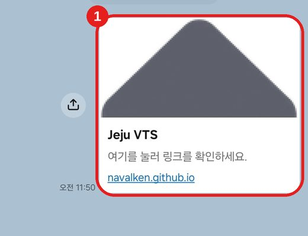
2카톡 안 브라우저의 공유 버튼
화면 오른쪽 아래의 공유 버튼(□↑)을 누릅니다.
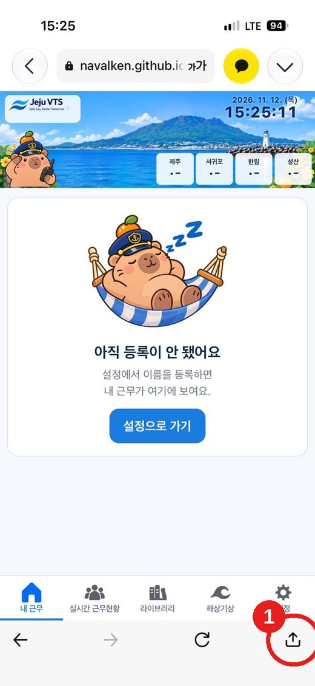
3Safari로 열기
메뉴에서 "Safari로 열기"를 누릅니다. 사파리가 열립니다.
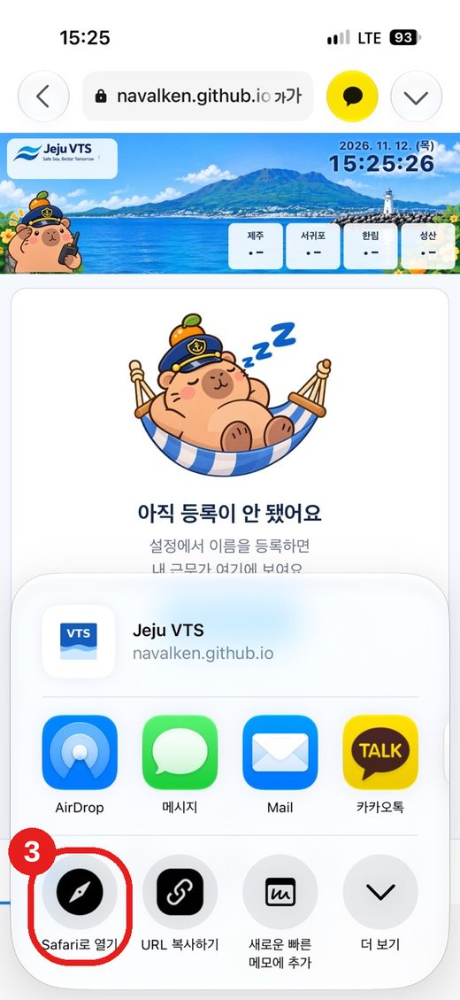
4사파리 주소줄 왼쪽 아이콘
사파리 아래쪽 주소줄에서 왼쪽 아이콘(줄 모양)을 누릅니다.
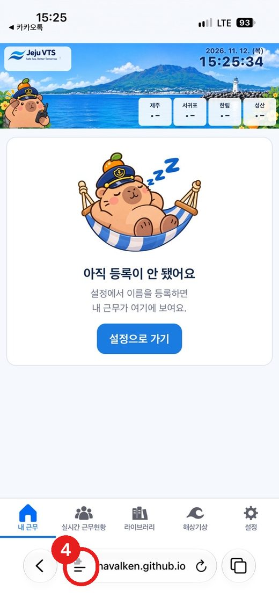
5공유
나오는 메뉴에서 "공유"를 누릅니다.
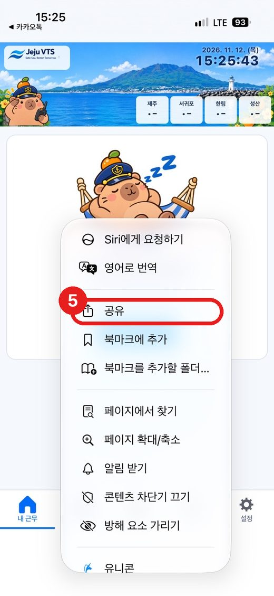
6홈 화면에 추가
아래쪽 목록에서 "홈 화면에 추가"를 누릅니다. 안 보이면 목록을 위로 밀어 올리세요.
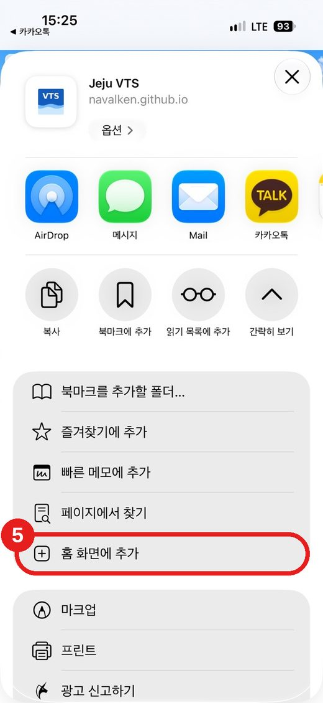
7추가
"웹 앱으로 열기"가 켜진(초록색) 상태를 확인하고, 오른쪽 위 "추가"를 누릅니다.
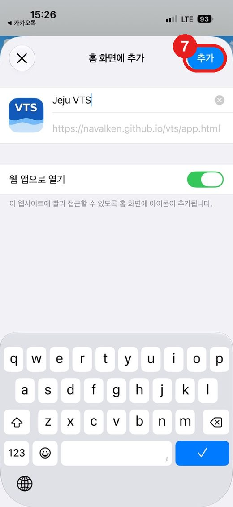
8홈 화면의 VTS 아이콘으로 열기
홈 화면에 생긴 VTS(Jeju VTS) 아이콘을 눌러 엽니다. 이제부터는 항상 이 아이콘으로 여세요. 열리면 맨 아래 설정 탭을 누릅니다.
9팀과 팀 코드 입력
설정에서 ① 팀 선택 → ② 팀 코드 입력 → ③ "명단 불러오기"를 누릅니다. 팀 코드는 팀장에게 물어보세요.
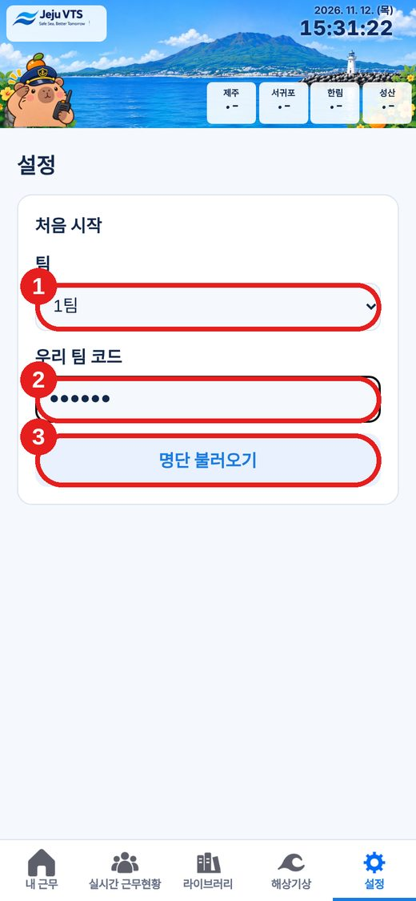
10내 이름 고르고 알림 허용
④ 내 이름을 선택하고 ⑤ "알림 허용하고 시작"을 누릅니다. 알림을 보내도 되냐고 물으면 "허용"을 누르세요. 목록에 이름이 없으면 아래 칸에 직접 입력합니다.
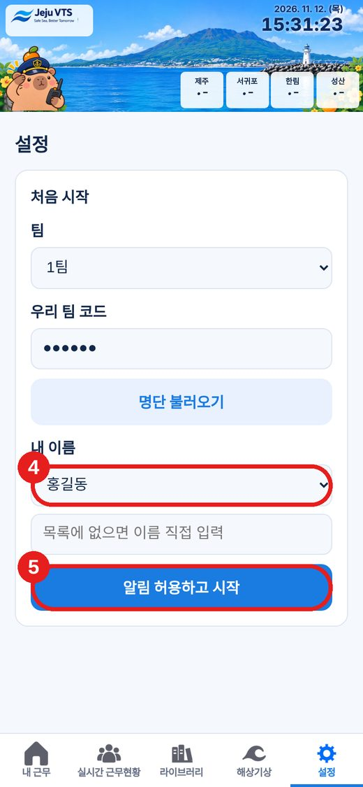
11끝!
등록이 끝나면 내 근무 화면에 오늘 근무가 나옵니다. 근무표가 올라오면 알림이 자동으로 예약됩니다.
카카오톡에서 링크를 바로 누르면 카톡 안의 작은 브라우저가 열려서 설치가 안 됩니다. 아래처럼 링크를 복사해서 크롬에 붙여넣기하세요.
1카톡에서 링크 메시지를 길게 누르기
단체방에 올라온 Jeju VTS 링크를 손가락으로 길게 누릅니다.

2복사
나오는 메뉴에서 "복사"를 누릅니다.
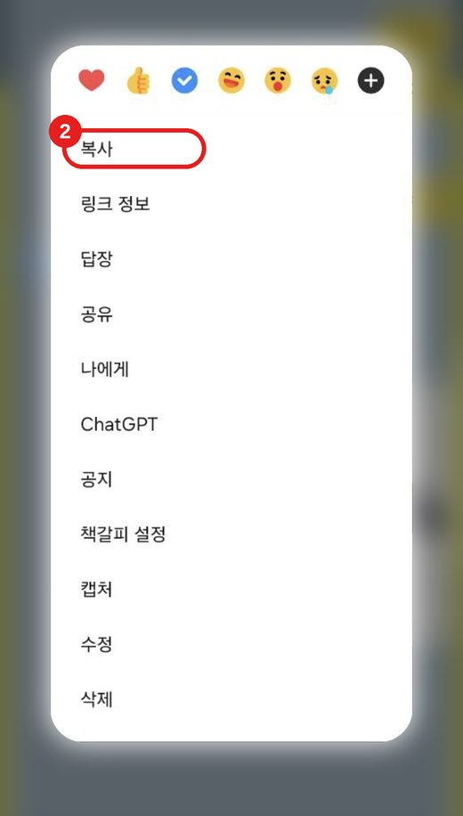
3크롬 열고 붙여넣기
크롬을 열고 맨 위 검색창을 길게 누르면 "붙여넣기"가 나옵니다. 누른 뒤 키보드의 이동(엔터)을 누르세요.
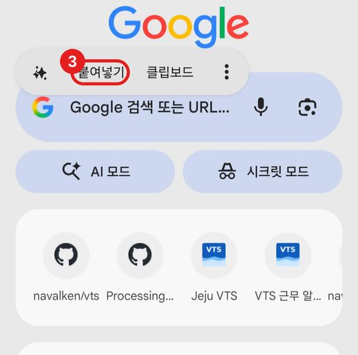
4크롬 메뉴(⋮)
앱 화면이 열리면 오른쪽 위 점 세 개(⋮)를 누릅니다.
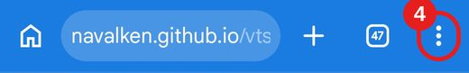
5설치 및 바로가기 만들기
메뉴를 아래로 내려 "설치 및 바로가기 만들기"를 누릅니다. (폰에 따라 "앱 설치" 또는 "홈 화면에 추가"로 보일 수 있습니다.)
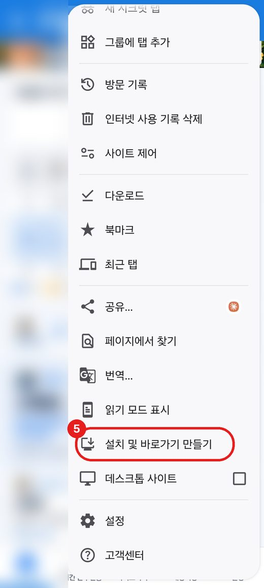
6앱 설치
아래 창에서 위쪽 VTS 항목을 누르고, 확인창이 뜨면 "설치"를 누릅니다.
※ 이 사진은 이미 설치한 폰이라 "앱이 이미 설치되어 있습니다"로 나옵니다. 처음 설치하는 폰에서는 "앱 설치"로 보입니다.
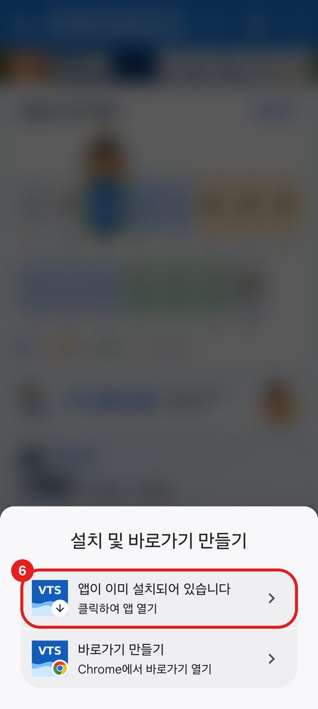
7홈 화면의 VTS 아이콘으로 열기
홈 화면에 생긴 VTS(Jeju VTS) 아이콘을 눌러 엽니다. 이제부터는 항상 이 아이콘으로 여세요. 열리면 맨 아래 설정 탭을 누릅니다.
8팀과 팀 코드 입력
설정에서 ① 팀 선택 → ② 팀 코드 입력 → ③ "명단 불러오기"를 누릅니다. 팀 코드는 팀장에게 물어보세요.
9내 이름 고르고 알림 허용
④ 내 이름을 선택하고 ⑤ "알림 허용하고 시작"을 누릅니다. 알림을 보내도 되냐고 물으면 "허용"을 누르세요. 목록에 이름이 없으면 아래 칸에 직접 입력합니다.
10끝!
등록이 끝나면 내 근무 화면에 오늘 근무가 나옵니다. 근무표가 올라오면 알림이 자동으로 예약됩니다.
자주 묻는 질문
알림이 안 와요
① 홈 화면의 VTS 아이콘으로 열었는지 확인하세요(아이폰은 필수). ② 폰 설정 → 알림 → VTS(또는 Chrome)가 "허용"인지 확인하세요. ③ 방해금지·집중 모드가 켜져 있으면 꺼 보세요. ④ 안드로이드는 배터리 절약 모드에서 앱을 막는 경우가 있습니다.
내 이름이 목록에 없어요
"목록에 없으면 이름 직접 입력" 칸에 본인 이름을 쓰세요. 근무표의 이름과 똑같이 써야 알림이 연결됩니다.
팀 코드를 모르겠어요 / 틀렸다고 나와요
팀장에게 우리 팀 코드를 물어보세요. 팀을 잘못 골라도 틀렸다고 나옵니다.
카톡에서 눌렀더니 설치가 안 돼요
카톡 안의 브라우저에서는 설치가 안 됩니다. 아이폰은 사파리로, 안드로이드는 크롬으로 옮겨서 하세요.
폰을 바꿨거나 앱을 지웠어요
같은 방법으로 다시 설치하고, 같은 이름으로 다시 등록하면 됩니다.
문의: 팀장 또는 관리자에게 알려주세요